FRAYNIX / LOCAL JAVA / MEASURED EXPERIMENT MEMORY
Reuse a verified reconstruction.
Measure the remaining work.
Four methods. The same new scenes, target poses and force limits. Every reconstruction, failed alternative and fresh execution counts.
Measured outcome, including the simpler control
Primary work is charged native ticks. Measured active wall time includes per-task lookup, planning, native trials and checks. Bank preparation and the successful proof-only recheck are separate overheads; the earlier interrupted audit is retained as additional development work; historical costs not present in the receipts remain unknown. The utility weight is a declared accounting preference.
Case-level evidence
Inspect actual retained motion
Top projection · X / Z metres
Object A · X position over time
Original native positions and orientations. The source may be the older memory during reconstruction or the new scene during a forecast/actual run. This page cannot actuate either world.
One system, a measured decision
SourceOwned verified memories → frozen bank → new source and targets → matched-budget comparison → original native checks → retained evidence. The comparison does not automatically promote a controller or rewrite the active world.
Actual app screenshots
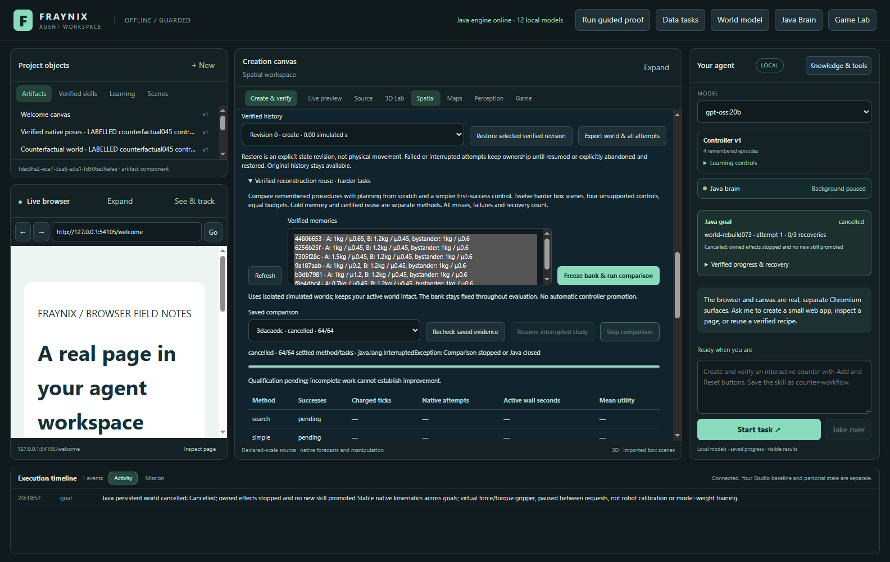
audit-stopped · isolated synthetic app · November 5, 2026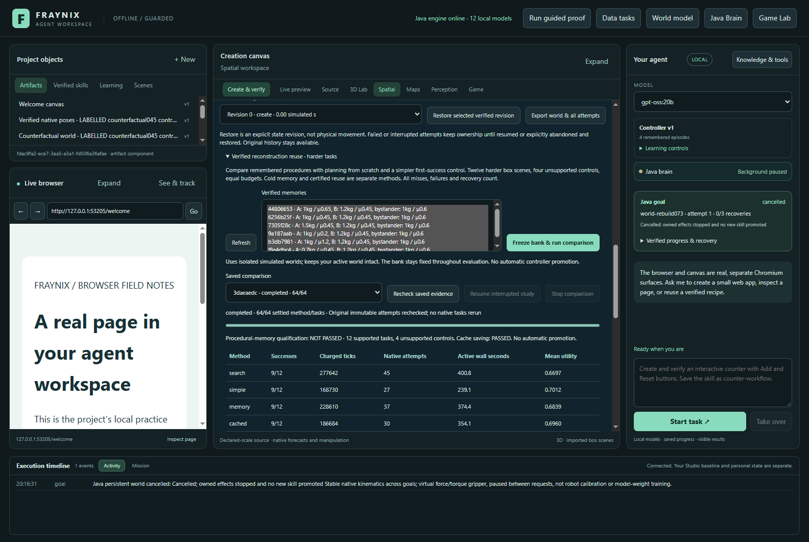
comparison-results · isolated synthetic app · November 5, 2026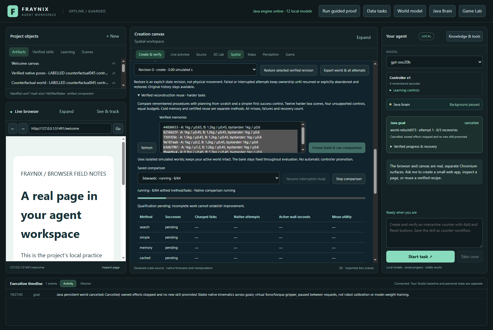
comparison-running · isolated synthetic app · November 5, 2026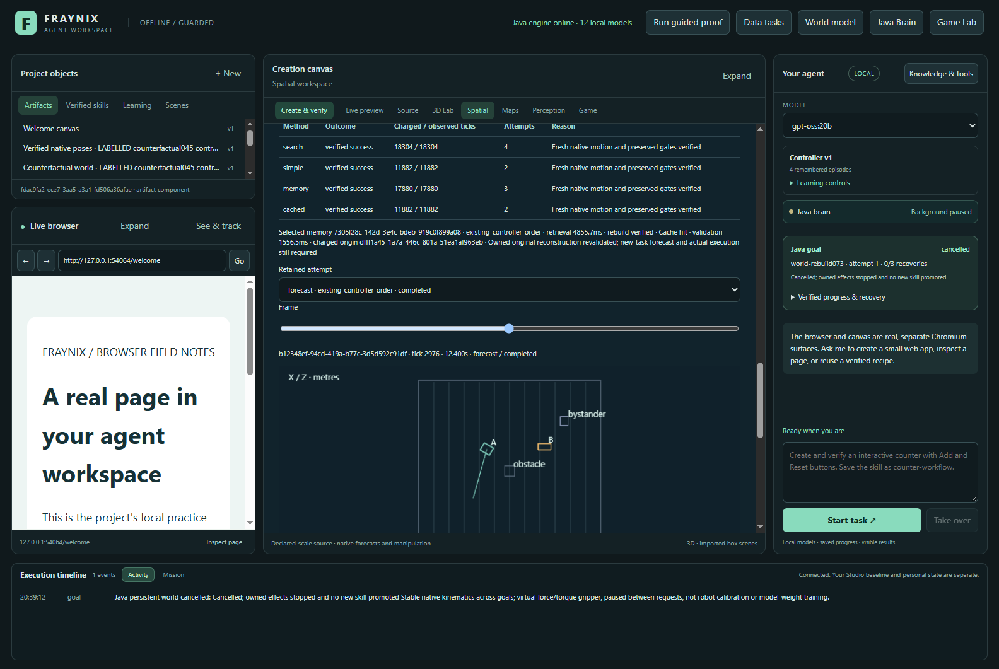
final-cache-replay · isolated synthetic app · November 5, 2026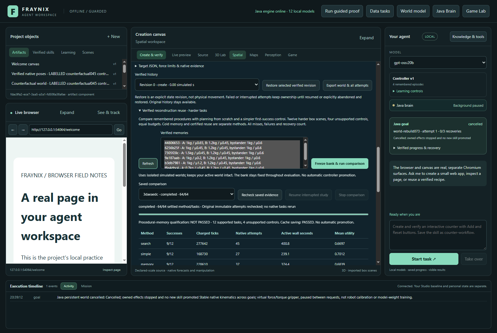
final-comparison-results · isolated synthetic app · November 5, 2026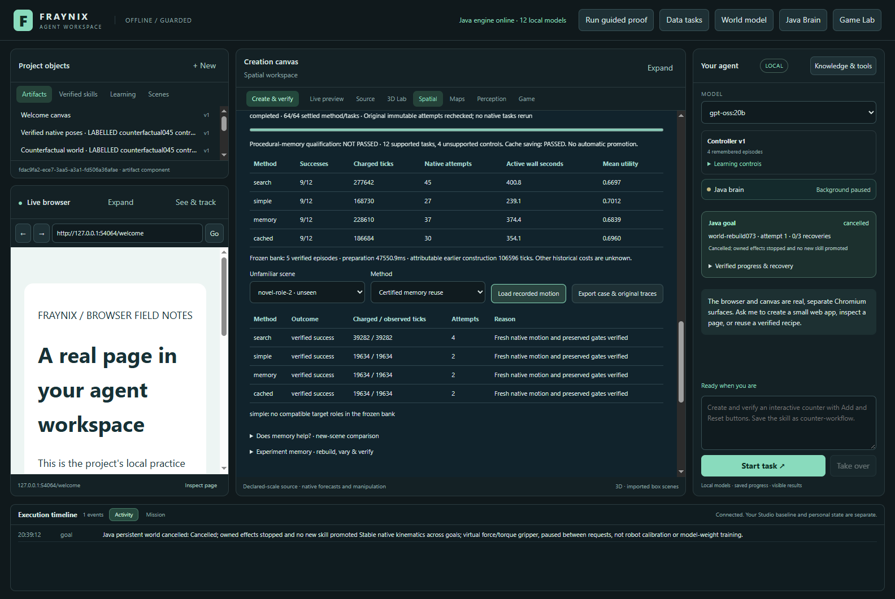
final-fallback-costs · isolated synthetic app · November 5, 2026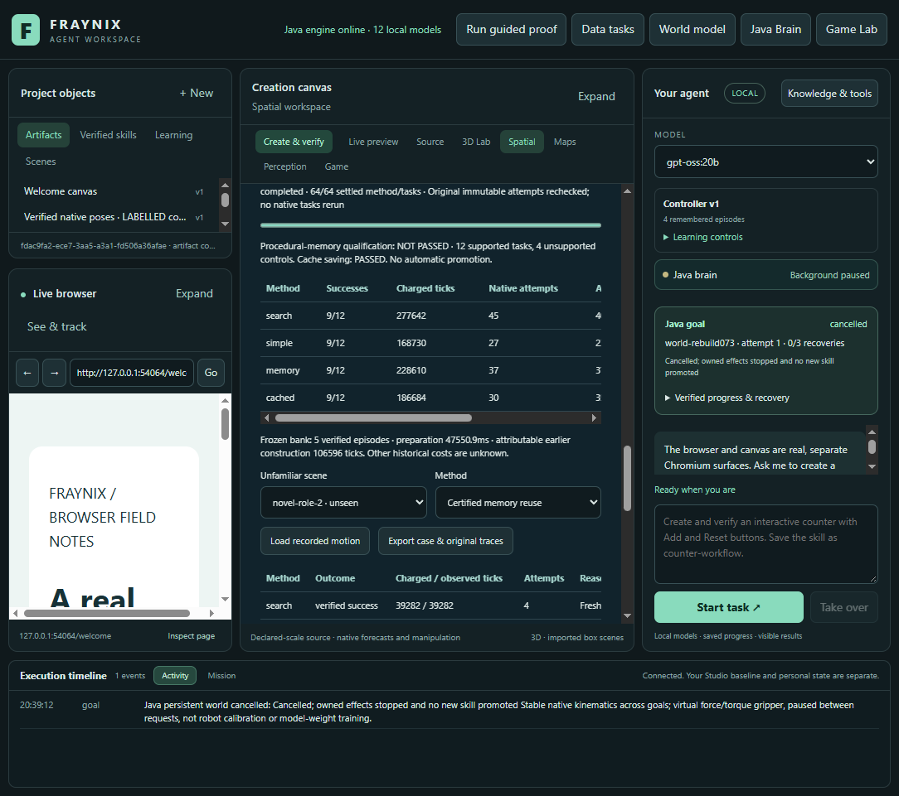
final-layout-1100 · isolated synthetic app · November 5, 2026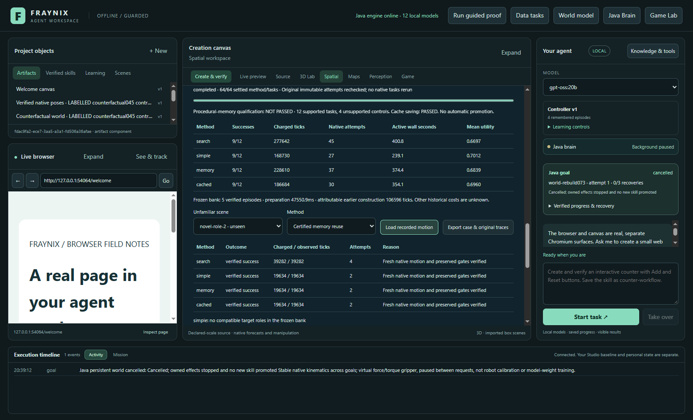
final-layout-1600 · isolated synthetic app · November 5, 2026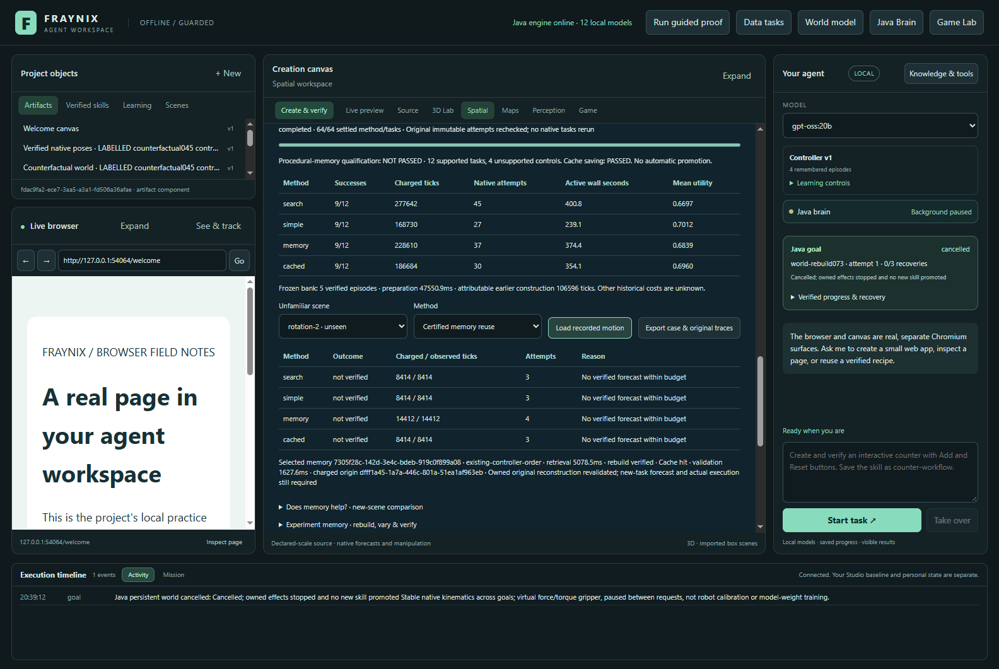
final-rotation-failure · isolated synthetic app · November 5, 2026force-margin-1-costs · isolated synthetic app · November 5, 2026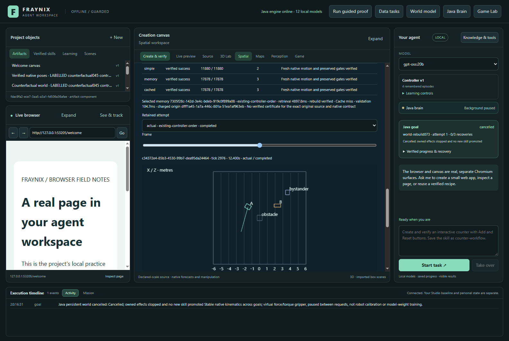
force-margin-1-replay · isolated synthetic app · November 5, 2026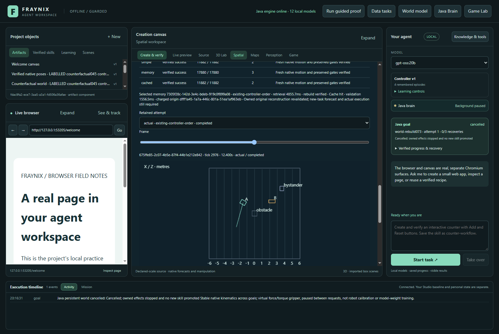
force-margin-2-replay · isolated synthetic app · November 5, 2026layout-1100 · isolated synthetic app · November 5, 2026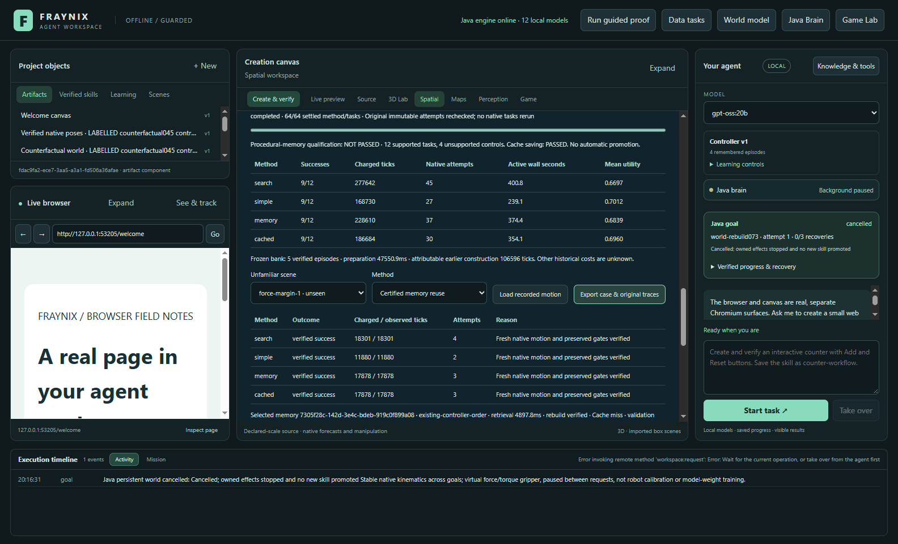
layout-1600 · isolated synthetic app · November 5, 2026no-floor-costs · isolated synthetic app · November 5, 2026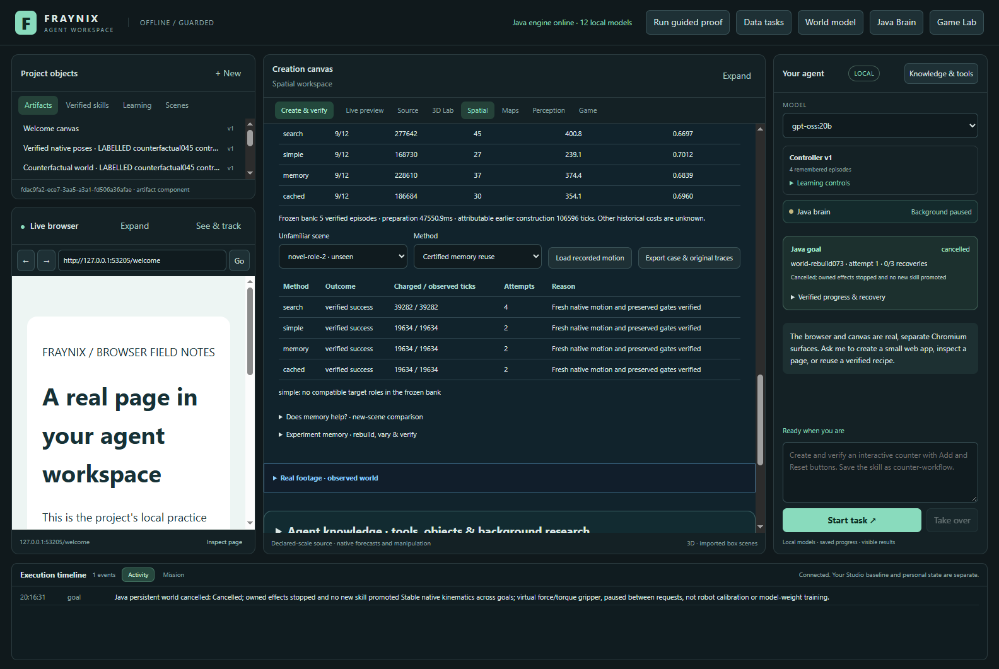
novel-role-2-costs · isolated synthetic app · November 5, 2026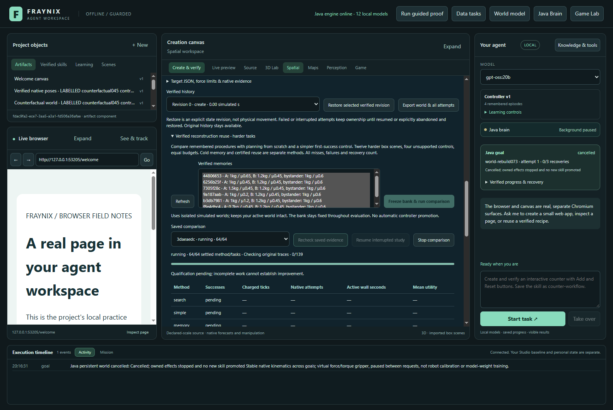
proof-recheck-running · isolated synthetic app · November 5, 2026rotation-1-costs · isolated synthetic app · November 5, 2026
Next gates
Use the observed failure and cost patterns to design the next prospective test. Expand procedural diversity and test whether remembered choices improve difficult outcomes, with a separately frozen benchmark. Reconstruction reuse here is exact source-bound proof reuse, not a new-task success cache. Keep the simple control, unfamiliar cases, complete costs and rollback. These declared native box experiments establish neither physical-camera accuracy nor general intelligence or LLM-weight training.